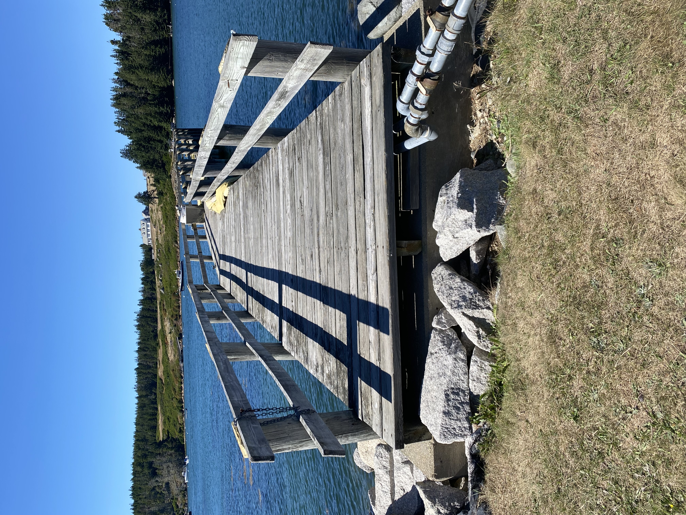

Best model predictions for sea level rise at the Store:
1 foot
of sea level rise within 5 years
2 feet
of sea level rise within 25 years
6 feet
of sea level rise within 75 years
- Because the store is located on the Thorofare, it is at risk of flooding during storms. This risk is increasing over time due to predicted sea level rise: up to 1 ft in five years, 2 ft in 25 years and 6 ft in 75 years according to best model predictions.
- According to these predictions, it is possible that the still water level at highest annual tide will be at floor level of the store within the lifetime of our young children.
- The Store manager and the Board have started strategic planning to make the store more resilient to sea level rise within the next five, 25 and 75 years.
- With the help of the town and the Island Institute, the Store received an initial grant to conduct a preliminary survey of heights above highest annual tide on the Store property and an initial assessment, conducted by engineering consultant Andrew McCullough, of near-term and longer-term steps to make the Store resilient.
- The engineering report was submitted to the Board at the end of June and we are now studying its recommendations, with the help of others in the Island community. These recommendations include guidance on securing building and fuel system in the short term and shoring up and raising or relocating the building in the longer term.
- All options will require substantial financial resources. Further engineering consultations to determine detailed engineering solutions and costs will be required. There is the possibility of applying for State of Maine Infrastructure grants, but even these will require the Store to finance at some level of match.
- The Store Board has therefore taken the steps to establish a tax-deductible public charity called “Friends of the Island Store”. We are now waiting final approval from the IRS.
- The Friends, which is a separate entity from the Store, will support the Store in two important ways: first, to provide funding to make the store resilient to future sea level rise, and also to support the store with interim financial support to pay the Store’s bills during the winter season when revenues are low. This important additional function will help keep the Store solvent until its financial resources can be replenished during the summer months. An example occurred this past winter, when kerosene prices increased dramatically and the Store had to pay its supplier for a delivery immediately, recuperating costs only later over time from repayment by its customers. The generous contributions from last year’s fundraising effort helped sustain the store through this difficult financial demand.
- The Store plays an important role in our Island community. The Store Board is grateful to the island community for its support of the Store and for the generous contributions it has made so far to building the Friends of the Island Store.

Image placeholder. This is a crop of the main site photograph. A storm-tide photo of the Store, or a diagram from the engineering assessment, would carry this page much further.
Be part of the plan
Securing the Store against rising water will take substantial resources, and every contribution moves the work forward.